Trip Report: Yosemite High Route
Logistics
The YHR is the simplest high route logistically (vs SHR, KCHBR, and WRHR). You start, resupply, and end all in the same place: Tuolumne Meadows. There is no need for shuttles, hitching, or any complexity.
You do need a wilderness permit from the park, which book 6 months in advance, though the exact trailhead depends on your chosen route. Fortunately, Yosemite doesn't require you to specify camping locations after night 1, so your itinerary can be flexible.
We brought all our food including resupply, which we left in the bear lockers at Tuolumne. The Tuolumne Meadows General Store had just opened for the season, and with limited inventory and no grill I'm glad we brought everything we needed.
Difficulty
Both Sprout and I found the YHR to be the easiest of our high routes.
Some of this could have been timing and luck (we basically had zero snow, zero bugs, low water crossings, warm weather, and no precip), but I genuinely think the YHR has some things going for it that make it blissful.
For starters, the YHR has a lot less talus than other routes. There's no "four miles and at least as many hours" stretches like on the WRHR. The granite in Yosemite tends to come as smooth slabs which are a lot easier than boulder jungles. The bulk of talus along the YHR is concentrated in the Foerster Ridge / Lyell area.
Additionally, the passes are almost all walk-up, walk-down. Stanton Pass (also on the SHR) and Russell Pass are probably the only ones with any difficulty. Nothing comes close to King Col on the KCHBR.
Route Recap
Day 0:
Calling this Day 0 instead of Day 1 as we only hiked for a couple hours. Our permit was for Glen Aulin (not the passthrough, which were snatched up before I could get one), so we had to spend our first night at Glen Aulin High Camp.
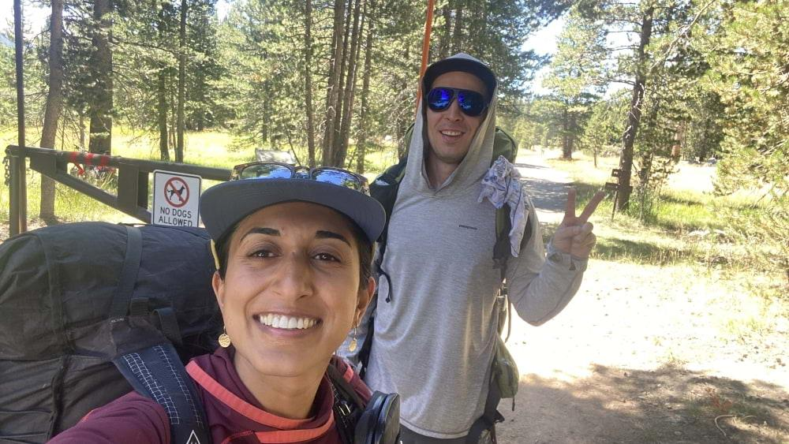
Sprout and I at the start
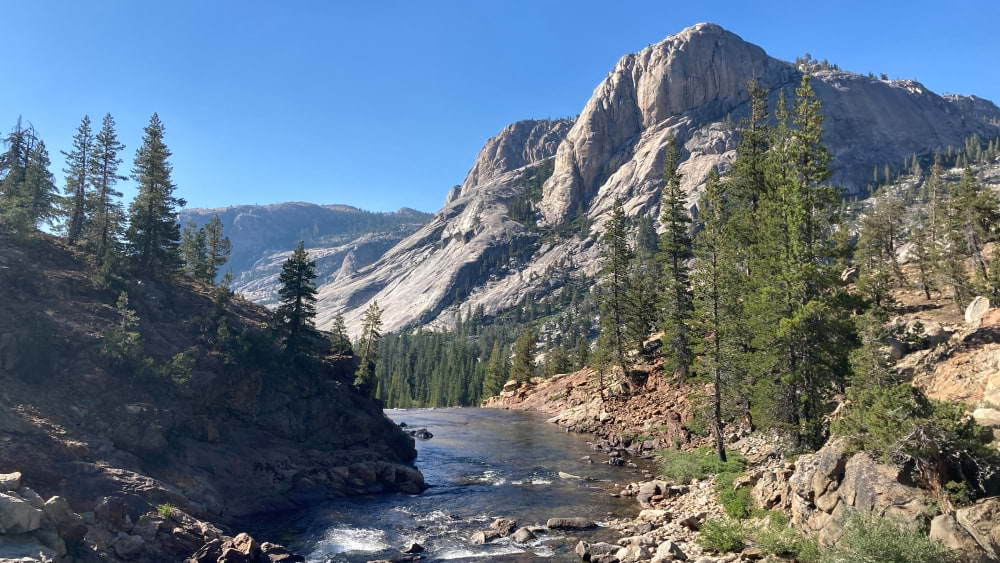
Beautiful glimpses into the Grand Canyon of the Tuolumne
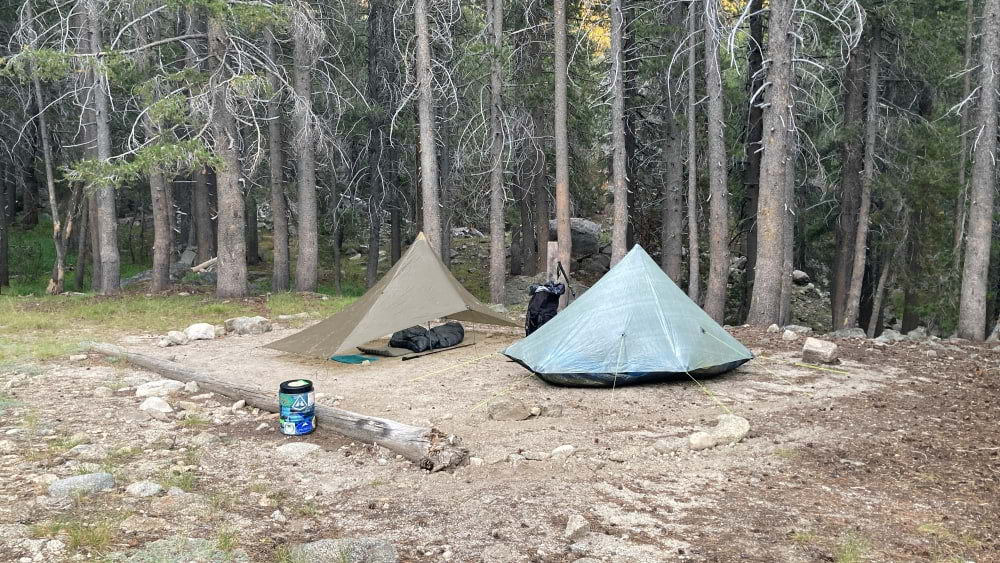
Our camping setup on night 1
Day 1:
While the first full day of hiking is usually rough, this one was particularly so. We had decided to take the Grand Canyon of the Tuolumne approach to the northern terminus, partly because it was the longest but also because it explored an interesting part of the park that neither of us had visited. Repeating the PCT seemed boring.
The Grand Canyon portion was beautiful. Granite walls and waterfalls hid around every turn, and the trail itself was impressive. I can't imagine how many hours of work went into building that trail.
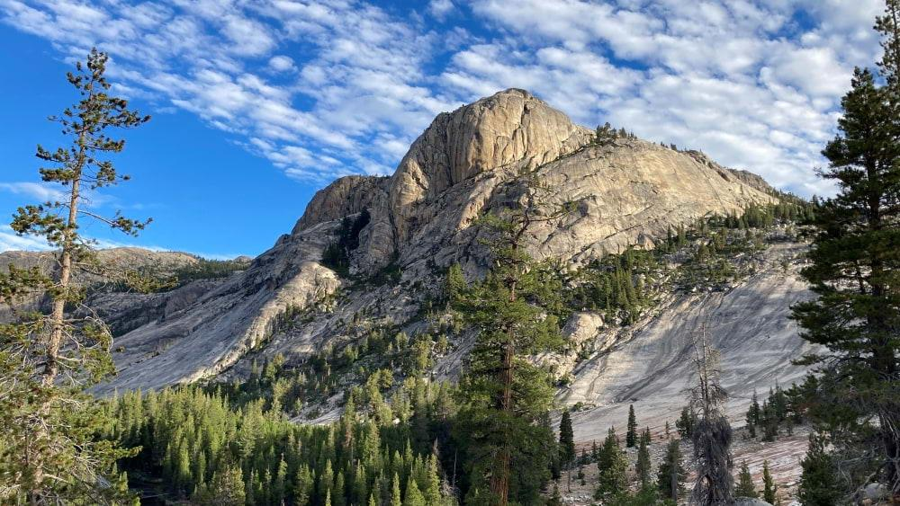
Evidence of glaciation everywhere
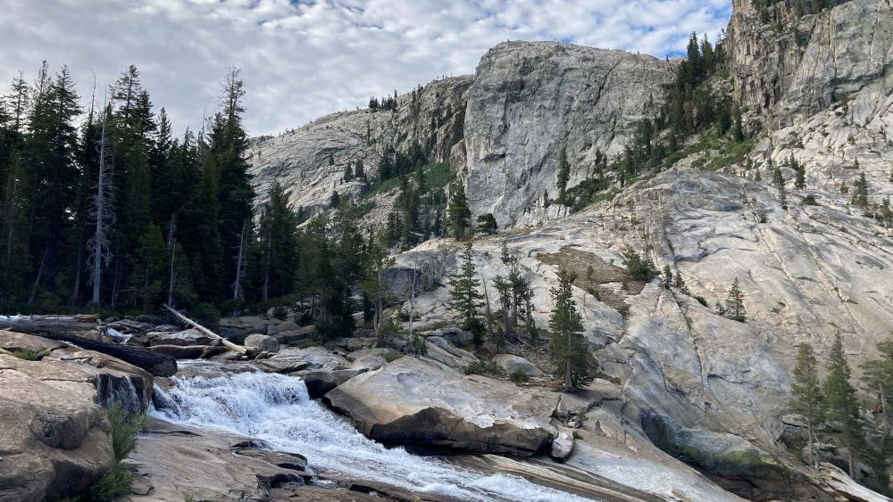
Slabs on slabs on slabs
Unfortunately, it was a hot day, and we were boiling by the time we reached the low point at Pate Valley. Hiking up in the 100+ degree afternoon seemed at best inefficient, at worst unsafe, so we hid in the shade until late afternoon.
The climb and contour to Pleasant Valley took longer (and was drier) than anticipated. We ended up night hiking until 10:30. Mentally exhausted, we pitched tents and I went to sleep without bothering to eat.
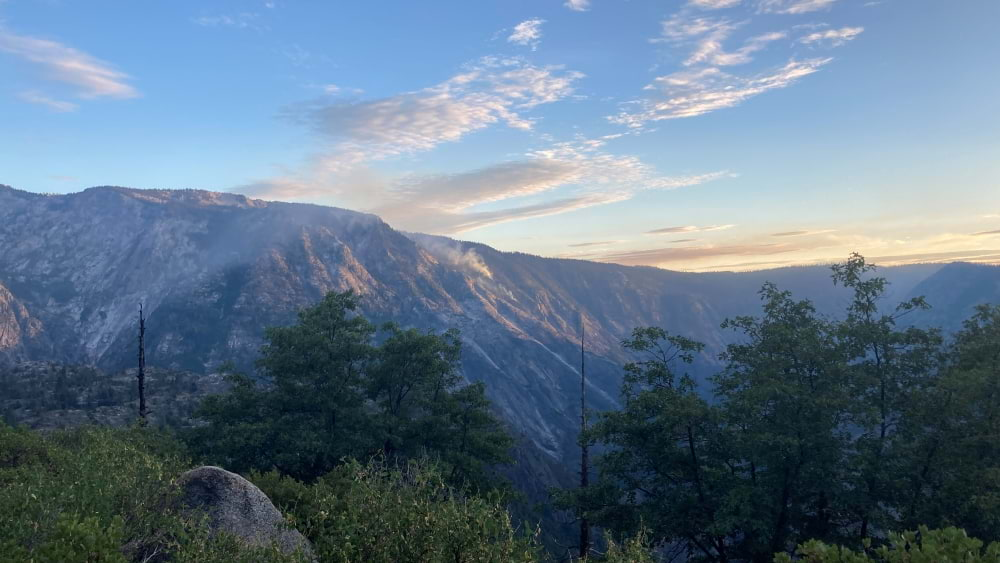
Looking south across Pate Valley, we spotted a wildfire during our evening climb
Day 2:
The morning hike along the Bear Lakes Trail was hot but pleasant, wildflowers were abundant. We were really itching to get to the PCT, and happy once we made it there for lunch. By the afternoon, my knees were feeling pretty rough from back-to-back off-the-couch Sierra 20's, so I forced Sprout to take a late afternoon break at Wilma Lake. I was a bit worried my knees weren't going to hold up, but we gingerly hiked a couple more miles along the PCT before calling it a day.
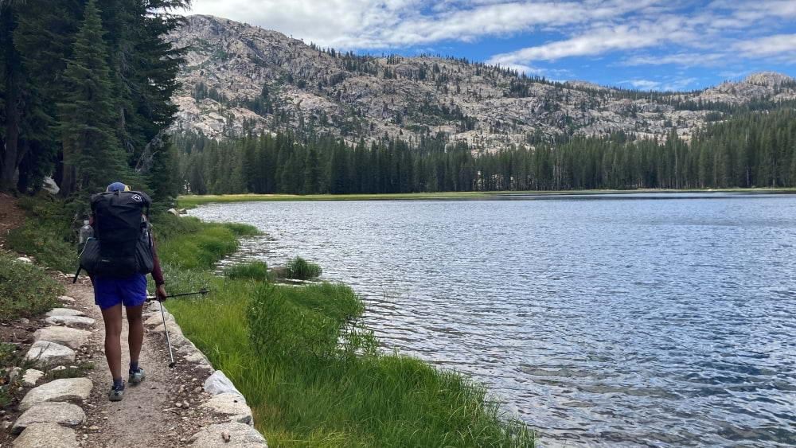
Limping along Wilma Lake, I was desperate for a break
Day 3:
Finally, the high route begins! We slipped right back into a familiar dynamic, picking our way up open forests to Keyes Peak Pass then Tower Peak Pass shortly after. Stubblefield Canyon was picturesque, and we took a nice break along the river before a brutal ascent up to Lake 9774T.
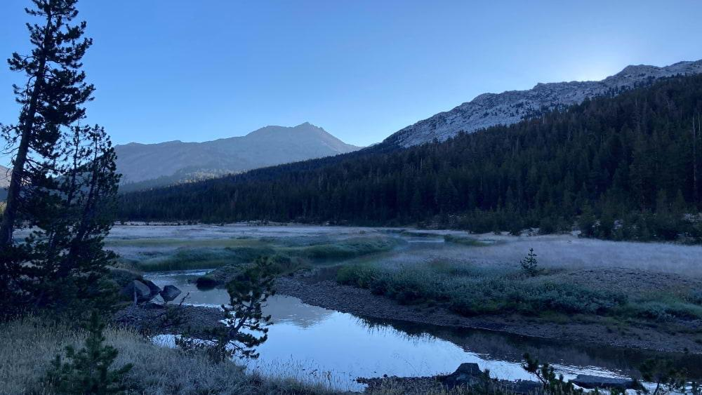
Early morning frost in Grace Meadows
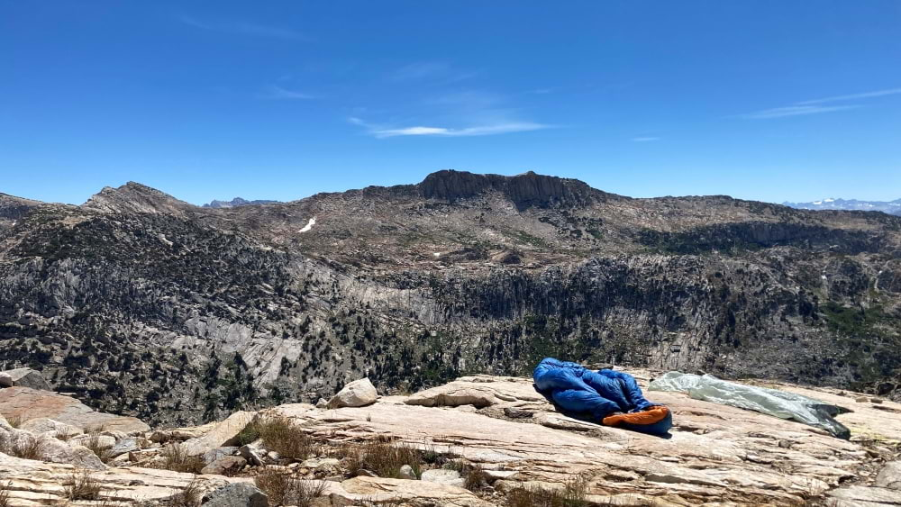
Airing out last night's condensation and taking in the view on Keyes Peak Pass
I was pretty tired descending from Wells Peak Pass, but felt positive because it meant we had achieved our day's goal and my knees felt better than they had on Day 2 despite the increase in vert/mile.
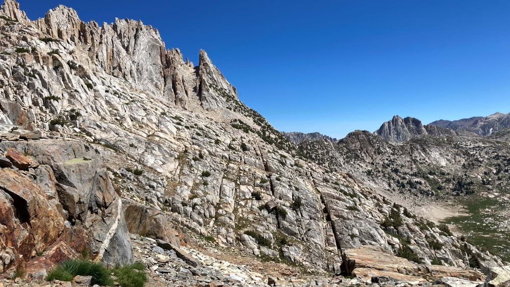
Jagged peaks and interesting slabs
Day 4:
An early morning ascent of Willow Pass lacked the aesthetic of some of the other passes, but it was a nice warm up to shake off the early morning cold. We cruised along trail up to Rock Island Lake, taking a long break at the outlet as we were well ahead of schedule for the day.
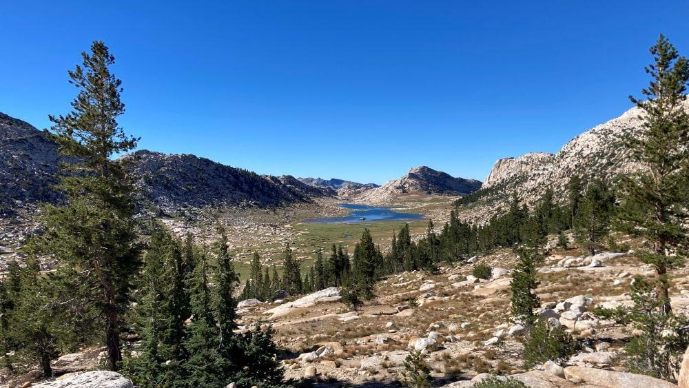
The view from Rock Island Lake Pass of Rock Island Lake
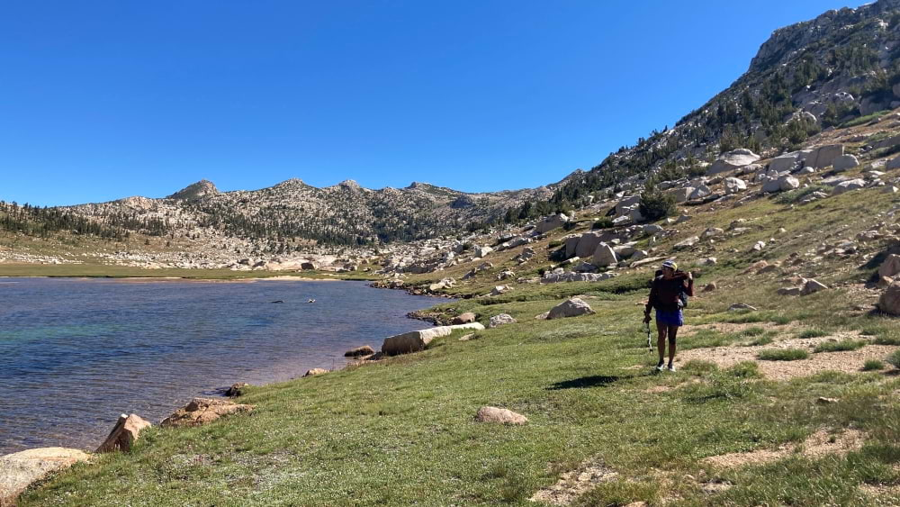
Easy tundra miles are my favorite part of any high route
We found Skurka's description of the descent from Suicide Ridge to be a bit over-explained (just stay with the drainage, it's not that complicated), and I'm not sure The Slide was enough of an attraction to warrant the YHR's circuitous route. It seemed a bit contrived given that Rock Island Pass and Mule Pass stay higher and our more direct. What even is the point of hiking a high route, anyway?
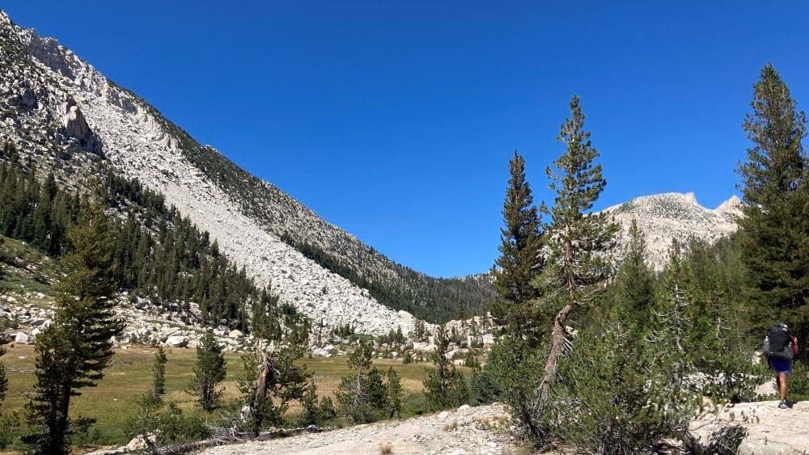
The Slide
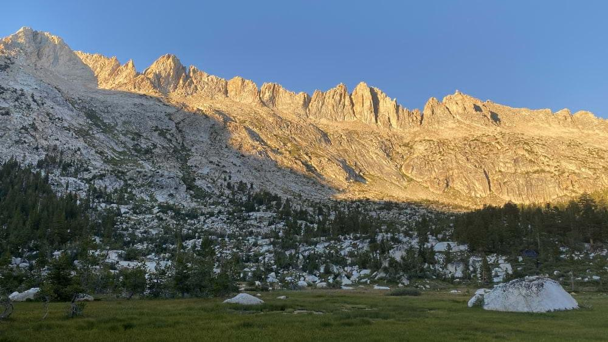
The ridgeline as we ascended the Burro Pass Trail reminded us both of the Feather Pass area
Day 5:
Our favorite day of the trip. We woke early, hoping to get over four passes and set ourselves up to get into Tuolomne the following day. We warmed up on the final couple miles to Burro Pass, surprised by the lack of condensation even though we camped near a high meadow.
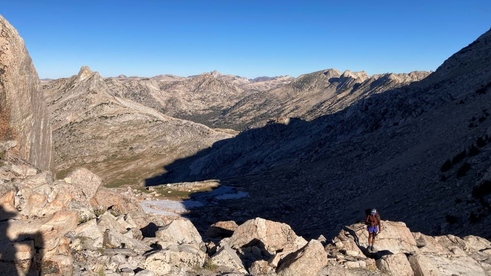
Not a cloud in the sky
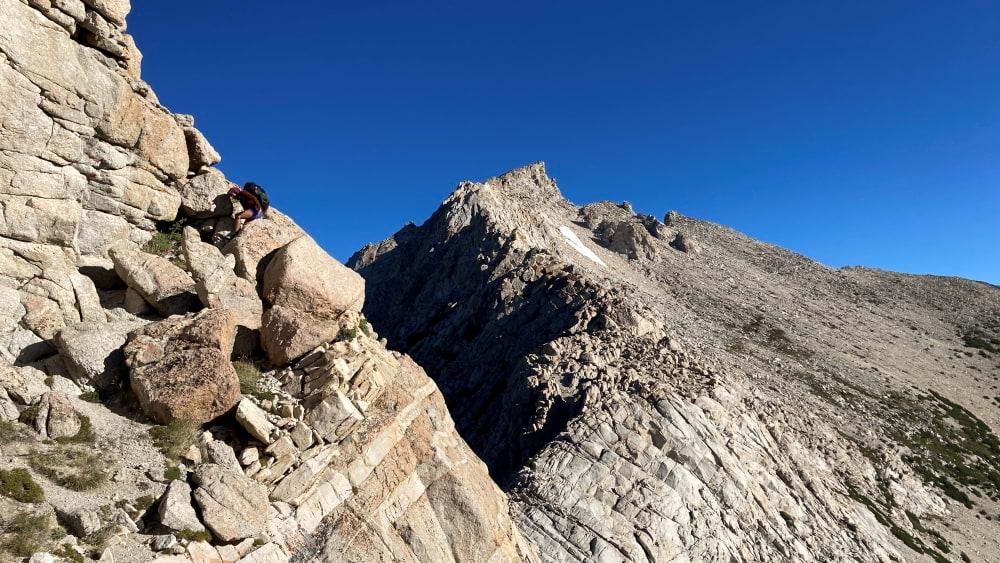
Sprout contouring at Matterhorn Pass to get to the Class 2 chute descent
Burro Pass and Matterhorn Pass were shaded and easy, with the contour to Matterhorn going a lot faster than it first looked like it would from across the valley. By contrast, it felt like it took forever to get from Matterhorn Pass to Stanton Pass, though it was pretty cool to retrace our steps from the SHR in the opposite direction.
The descent from Soldier Lake down to Virgina Canyon was brutal. It was hot and our knees were feeling the slabs. We joked about coordinating the scheduling of our knee replacement surgeries.
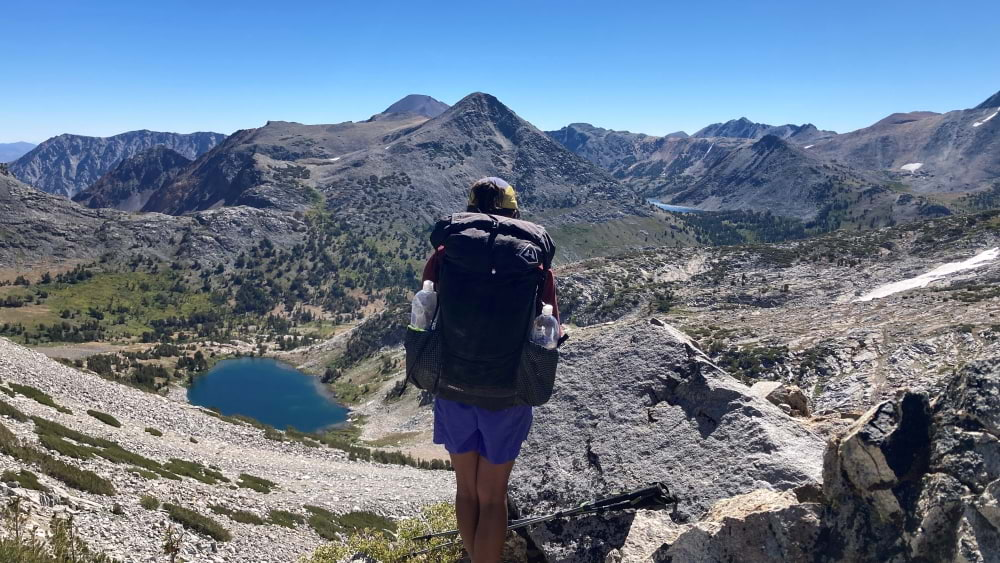
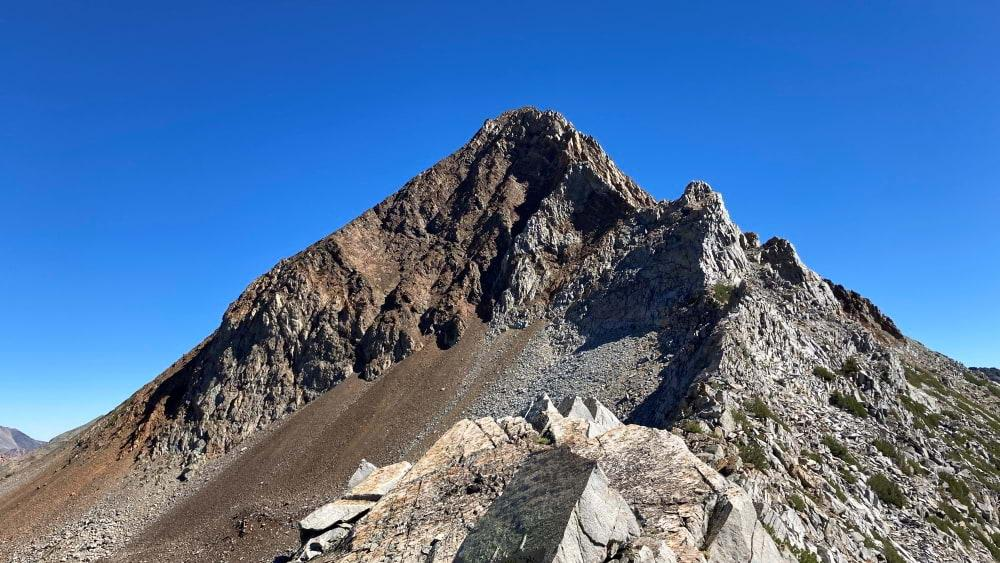
Big views from Stanton Pass
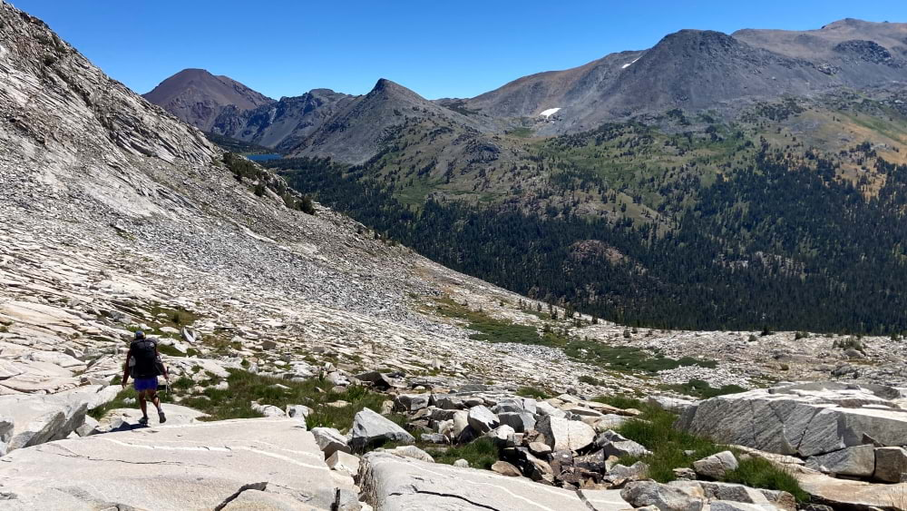
Starting the brutal, slabby descent from Soldier Lake
Again, the YHR has an interesting route choice when it descends off-trail directly up the fall line to get to McCabe Creek. It felt like a lot more than 1000 ft, but it seemed pretty silly to put in all this work when we could have just continued along the trail and snaked up the trail alongside McCabe Creek. Skurka does call this out as an alternate; the only reason it's not the main route I suspect is a desire to maximize the percentage of the route that is off-trail.
Anyway, we ascended up to McCabe Lake in the blistering afternoon heat. Don't Be A Smart Pass was straightforward, though we did have to work right a bit to avoid lingering snow (we didn't bring axes). I thought the descent to Roosevelt Lake was going to be brutal, but it ended up being an extremely gentle and pleasant stroll along blissful tundra. In the late afternoon, North Peak and Conness were gorgeous. We found a mediocre camp spot at the edge of the treeline. It had been an absolutely gorgeous and remote day with little sign of anyone else.
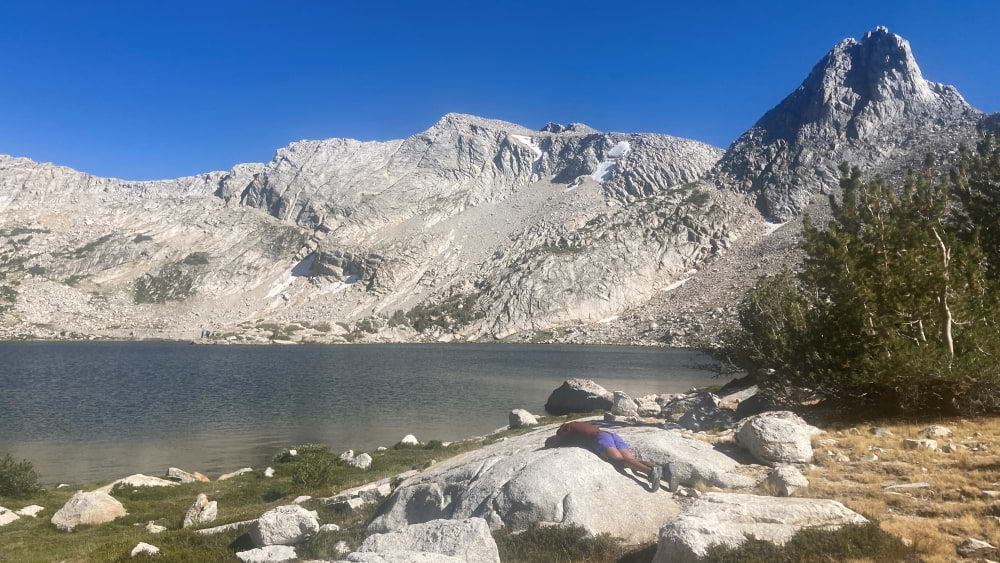
Sprout "needed an extra minute" at McCabe Lake :)
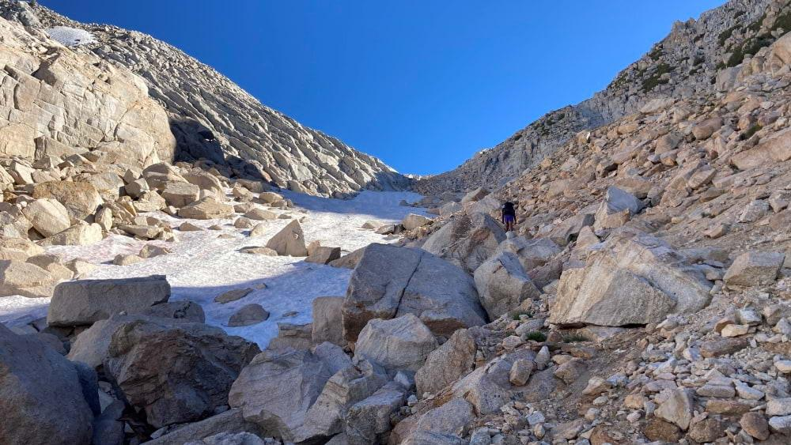
Lingering snow on the north face of Don't Be A Smart Pass
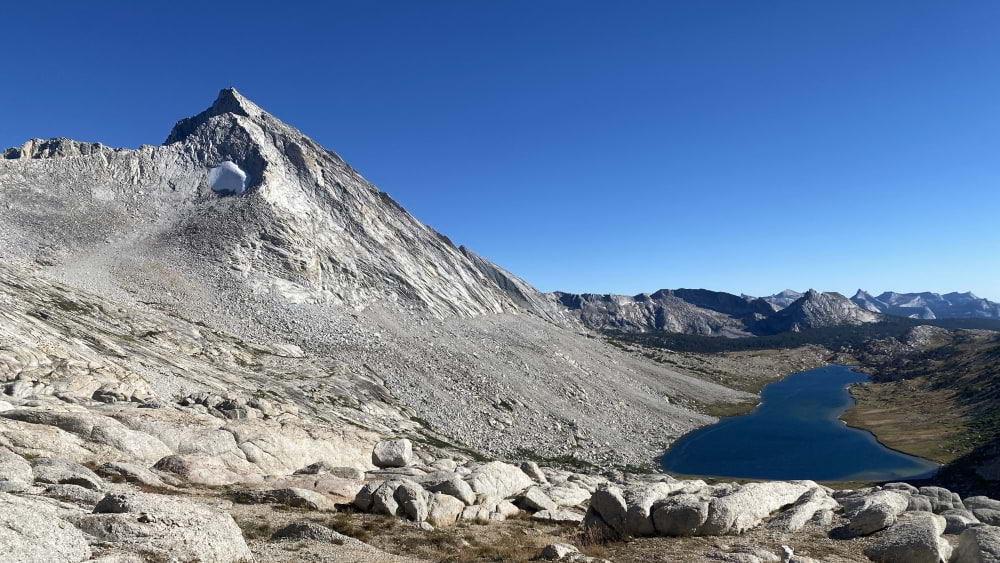
Conness and Roosevelt Lake, the most picturesque stretch of the YHR
Day 6:
We crushed the morning miles into Tuolumne Meadows, eager for "town food" and to check in with loved ones. We got in by 10:00, only to discover the grill wouldn't be opening at the general store. Bummer! We still got some deli sandwiches and ice cream, as well as a 2L of Gatorade to hydrate. After some phone calls and swapping out gear (being able to pick up fresh socks at the midpoint of this trip has to be one of the selling points of the YHR), we decided to head out.
We originally planned to continue along the core route (i.e., hiking the southern portion clockwise), but we learned there wasn't any legal camping until Kuna Creek, ~13 miles ahead, so we flipped and decided to leave via Rafferty Creek so we didn't have to push. Of course, Tuolumne Pass was gentle and the trail miles blissful, so we ended up hiking all the way past Babcock Lake before finding a flat spot on the descent down to Merced Lake Ranger Station. The moon was so bright at night.
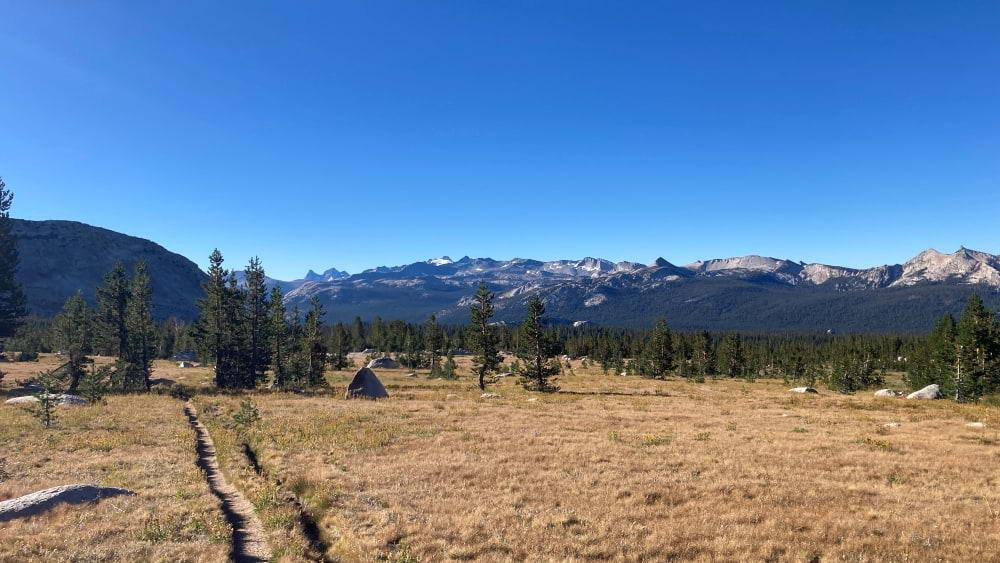
Looking south past Tuolumne at what's to come next
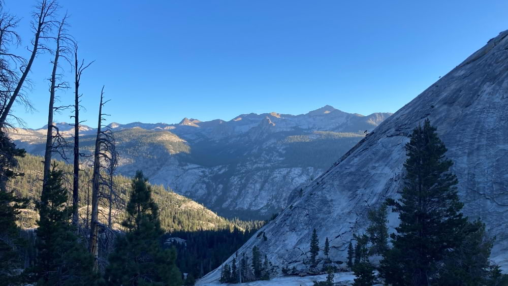
Looking down toward the Merced, an abundance of dead trees forced us to hike a bit farther than anticipated
Day 7:
We savored our last couple trail miles before turning off to begin the big climb to Quartzite Peak. It was long, but really not diffult. Just consistently steep. A woman trying to do the southern loop in 2 days passed us ~500 ft up the climb--apparently she had started from Tuolumne just 5 hours earlier. Impressive.
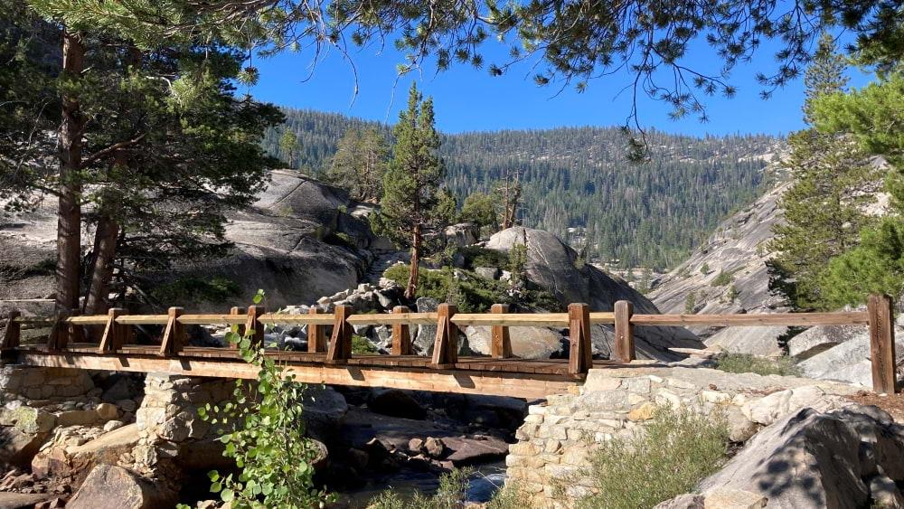
A last bit of civilzation, the bridge that marks the start of the southern portion
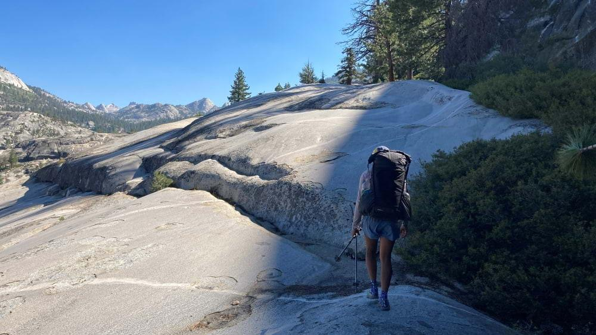
Sprout beginning the slabby contour through "The Mezzanine"
We summitted Quartzite in time for lunch, meeting her and another couple of YHR hikers at the summit. While that pair went to go attempt Mount Clark, we continued on skirting the next couple passes and setting up an early camp at Adair Lake. It was super windy, but not a cloud in the sky!
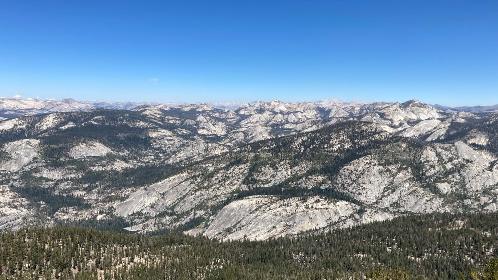
Big views from Quartzite Peak
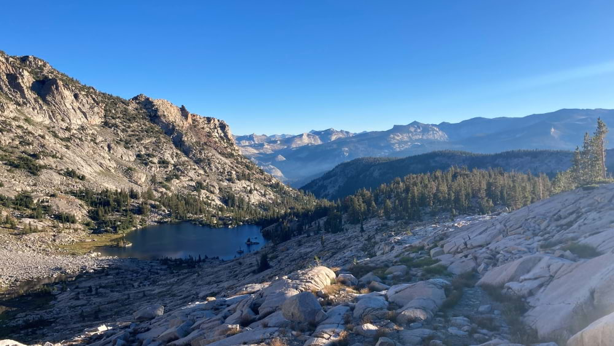
We saw very few people and clouds during our hike
Day 8:
Skurka's description of Sue Pass is emotional, and I found myself reflecting upon it and tearing up as we ascending and descended in the morning hours. Filled with love and appreciation for the loved ones in my life, we meandered down the undulating terrain before finally hitting the Red Peak Pass trail. We cruised through the trail portion, enjoying some podcasts and audiobooks, before things got real again on Foerster Ridge Pass.
I have no idea what Skurka is talking about with descending on slabs down to Lake 10217T. We crushed talus the entire way and I don't see any other way to make that descent.
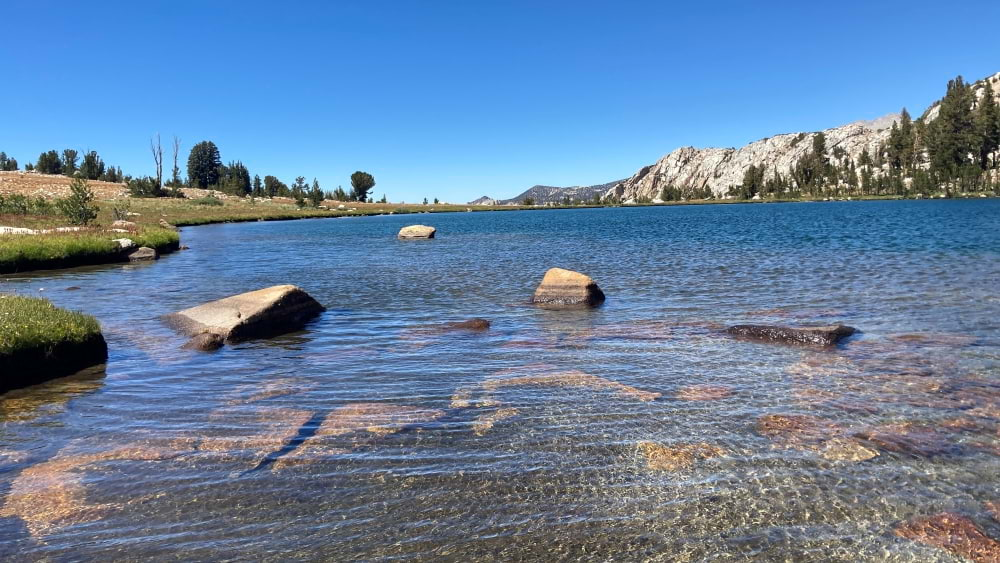
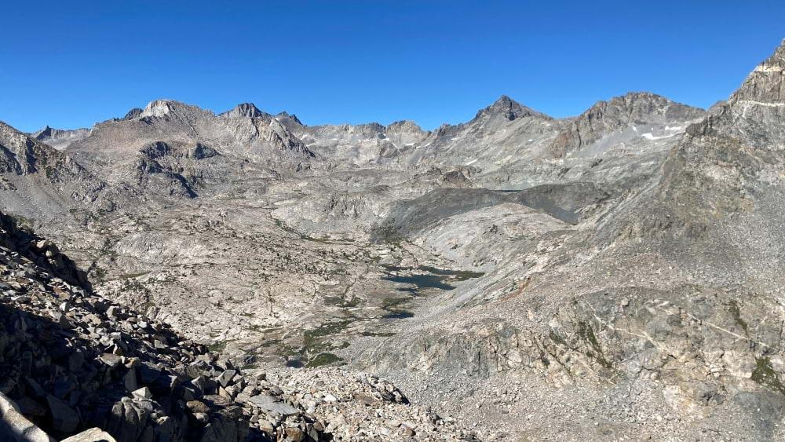
The view from Foerster Ridge Pass--time to crush down some talus
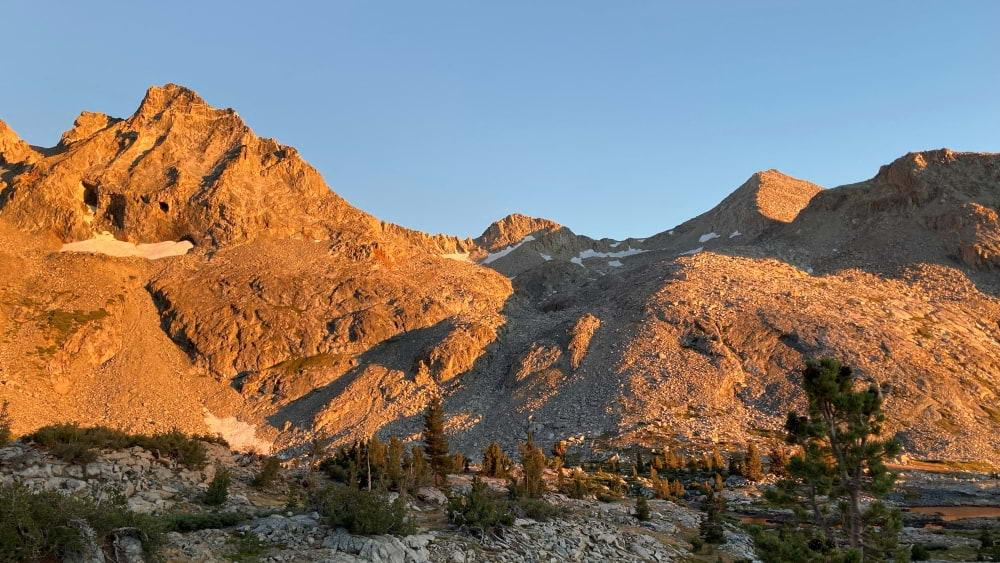
Alpenglow from Lake 10217T looking back toward Mount Ansel Adams and Foerster Peak
Day 9:
Our penultimate day, I was stoked to spot Western Columnbine during our ascent up to Sluggo Pass, which I was only able to identify because we just planted some in our backyard.
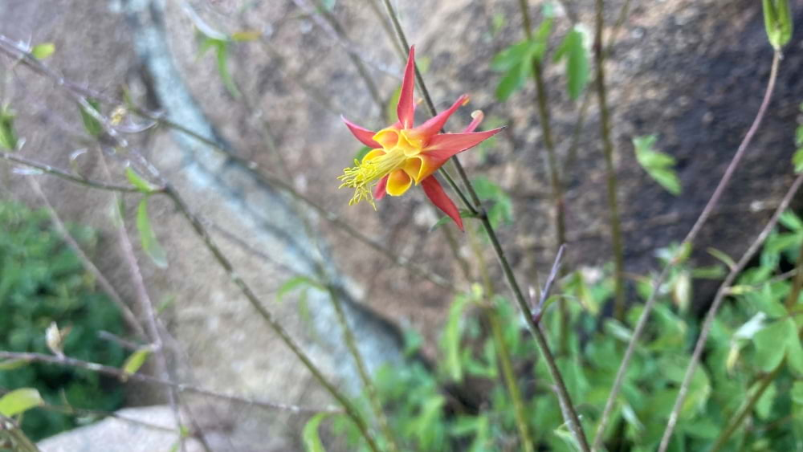
Western Columbine!
The ascent of Russell Pass was a straightforward grind, though Sprout did kindly correct me from going to the wrong notch. The descent was a slow, tedius affair. The talus up top was unstable, having recently been freed from its glacial chains. Making it down, we slid around on deep suncups before more talus, then slabs. We took a long lunch break at the hanging valley before the JMT/PCT.
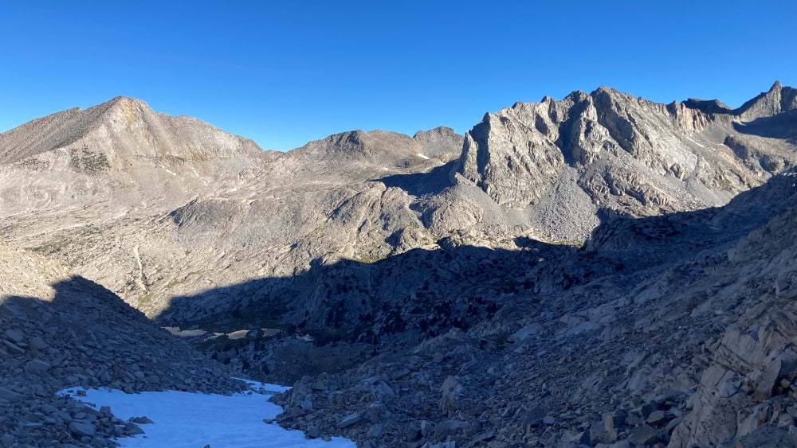
An endless granite playground
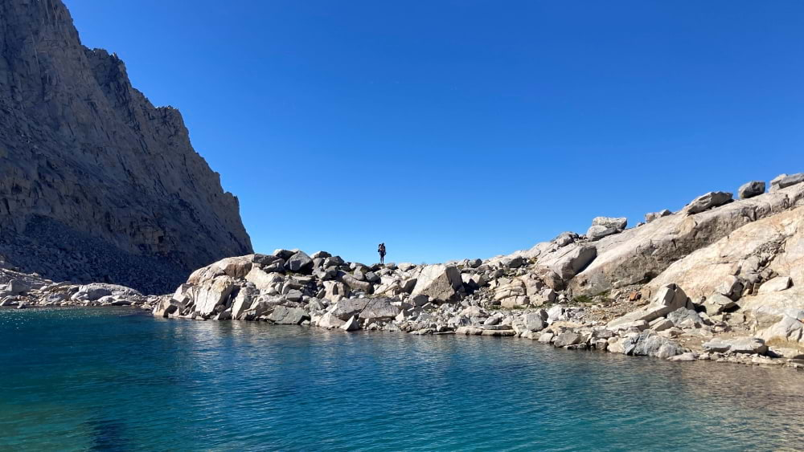
Looking back at Sprout during the ascent up to Russell Pass
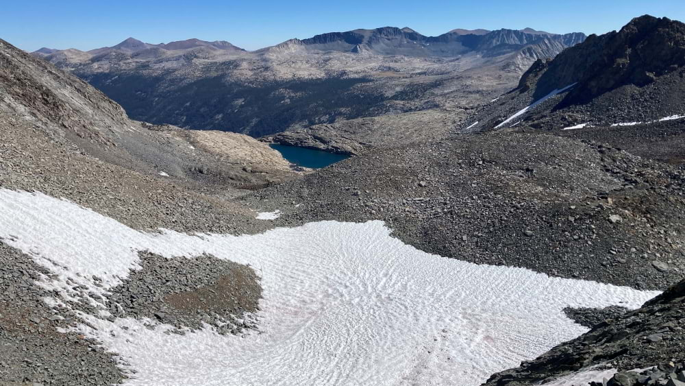
The view from Russell Pass, with the green of Lyell Canyon off in the distance
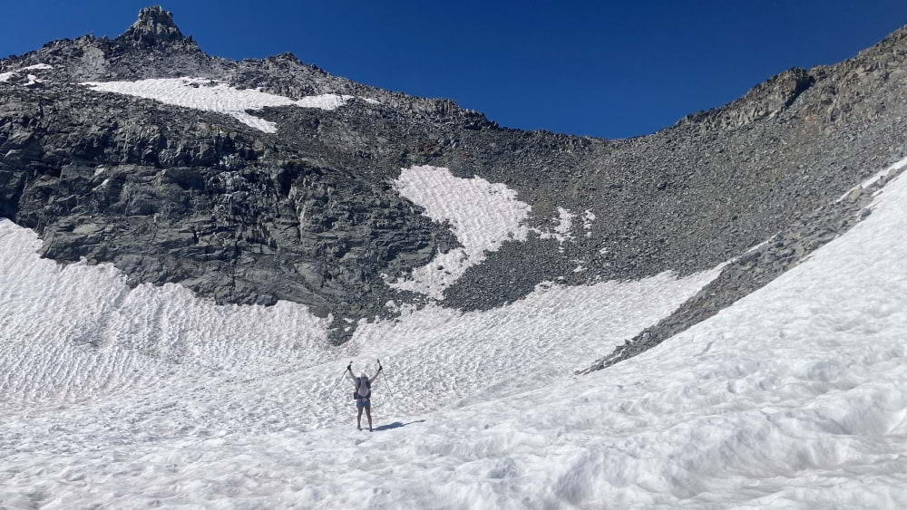
Stoked after descending the talus and making it onto snow
It was kind of cool to contour above Lyell Canyon, having passed through there on so many other trips. A different perspective on a familiar place.
Day 10:
Time to go, pizza and soft beds await! We cruised over the Kuna Crest, quickly picking up trail at Spillway Lake. The Parker Pass Creek Valley was beautiful, but once we hit trail the race to the finish line was on.
We hiked downhill before starting our final stretch of off-trail travel. Again, the YHR was beautiful, 10/10 would recommend, but the final ~5 miles felt silly. Meandering through flat lodgepole forests within earshot of the Tioga Pass Road felt... contrived.
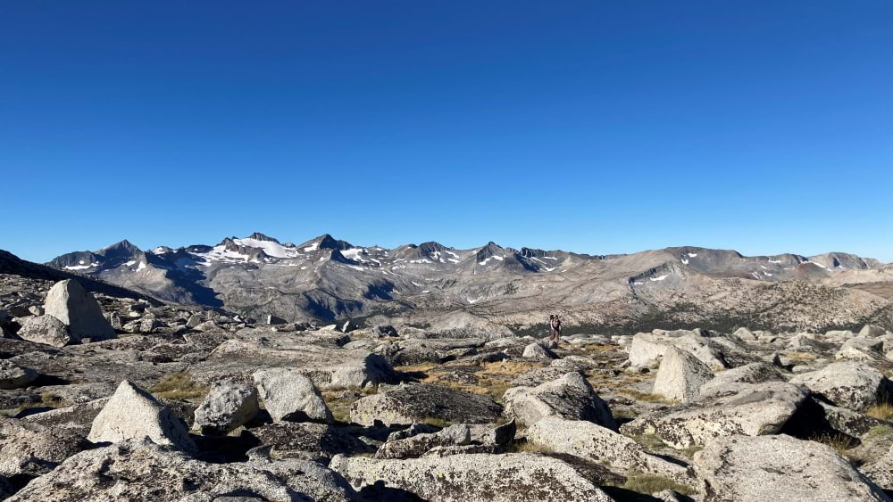
Looking back at the Lyell / Russell Range from the Kuna Crest area
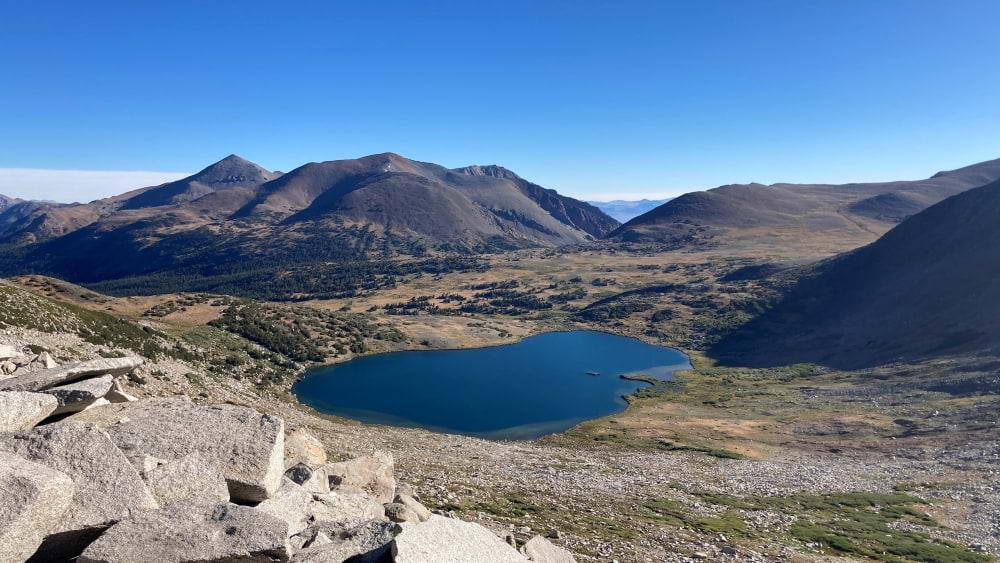
The calmness of Helen Lake capturing our emotions at the end of the YHR